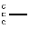

Table of Contents Previous Chapter
This reference manual describes the Python programming language. It is not intended as a tutorial.
While I am trying to be as precise as possible, I have chosen to use English rather than formal specifications for everything except syntax and lexical analysis. This should make the document more understandable to the average reader, but will leave room for ambiguities. Consequently, if you were coming from Mars and tried to re-implement Python from this document alone, you might have to guess things and in fact you would probably end up implementing quite a different language. On the other hand, if you are using Python and wonder what the precise rules about a particular area of the language are, you should definitely be able to find them here. If you would like to see a more formal definitition of the language, maybe you could volunteer your time or invent a cloning machine.
It is dangerous to add too many implementation details to a language reference document the implementation may change, and other implementations of the same language may work differently. On the other hand, there is currently only one Python implementation, and its particular quirks are sometimes worth being mentioned, especially where the implementation imposes additional limitations. Therefore, you'll find short "implementation notes" sprinkled throughout the text.
Every Python implementation comes with a number of built-in and standard modules. These are not documented here, but in the separate Python Library Reference document. A few built-in modules are mentioned when they interact in a significant way with the language definition.
The descriptions of lexical analysis and syntax use a modified BNF grammar notation. This uses the following style of definition:
name: lc_letter (lc_letter | "_")* lc_letter: "a"..."z"
The first line says that a name is an lc_letter followed by a sequence of zero or more lc_letters and underscores. An lc_letter in turn is any of the single characters `a' through `z'. (This rule is actually adhered to for the names used in lexical and grammar rules in this document.)
Each rule begins with a name (which is the name defined by the rule) and a colon. A vertical bar (|) is used to separate alternatives; it is the least binding operator in this notation. A star (*) means zero or more repetitions of the preceding item; likewise, a plus (+) means one or more repetitions, and a phrase enclosed in square brackets ([ ]) means zero or one occurrences (in other words, the enclosed phrase is optional). The * and + operators bind as tightly as possible; parentheses are used for grouping. Literal strings are enclosed in quotes. White space is only meaningful to separate tokens. Rules are normally contained on a single line; rules with many alternatives may be formatted alternatively with each line after the first beginning with a vertical bar.
In lexical definitions (as in the example above), two more conventions are used: Two literal characters separated by three dots mean a choice of any single character in the given (inclusive) range of ASCII characters. A phrase between angular brackets (<...>) gives an informal description of the symbol defined; e.g. this could be used to describe the notion of `control character' if needed.
Even though the notation used is almost the same, there is a big difference between the meaning of lexical and syntactic definitions: a lexical definition operates on the individual characters of the input source, while a syntax definition operates on the stream of tokens generated by the lexical analysis. All uses of BNF in the next chapter ("Lexical Analysis") are lexical definitions; uses in subsequent chapters are syntactic definitions.